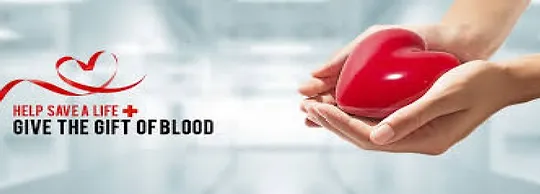

Blood Supply Management System is dedicated to ensuring a safe and sustainable blood supply for those in need. Your contribution can help us achieve our mission of saving lives through blood donation.
Join us in making a difference in the community.
Blood is a complex and vital fluid in the human body, responsible for transporting nutrients, oxygen, hormones, and waste products. It consists of red blood cells, white blood cells, platelets, and plasma.
Discover how blood donation saves lives by providing essential support to patients undergoing surgeries, trauma victims, and those with medical conditions.
Find out if you're eligible to donate based on age, weight, health, and lifestyle criteria. Learn about pre-donation screening and tests to ensure the safety of both donors and recipients.
Understand the step-by-step process of blood donation, from registration and health checks to the donation itself and post-donation care.
Learn about the role of red blood cells in transporting oxygen to body tissues and their specific medical uses.
Discover how white blood cells contribute to the immune system and their role in various medical treatments.
Understand the importance of platelets in blood clotting and their common use in cancer treatments.
Explore the liquid component of blood containing water, electrolytes, proteins, and hormones, vital for maintaining blood pressure and supporting clotting.
Understand when blood transfusions are necessary, such as during surgical procedures, trauma, anemia, and cancer treatment.
Learn about the process of crossmatching blood to ensure compatibility between donor and recipient, minimizing risks of adverse reactions.